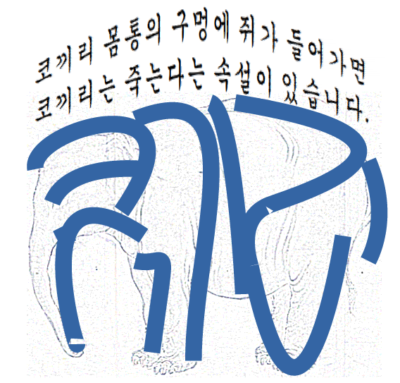

韓国宣教師の象: Kipling, "Moti Guj - Mutineer"¶
{kind=link}
象の検閲¶
宣教師ジェームス・ゲイルは朝鮮語と中国語に通じた。1904年に四冊シリーズの児童向け朝鮮語読本を作る [rutt832] 。1894年以降、李氏朝鮮は教育改革に手をつけ、その一環として、正書法を漢文から国(ハングル)漢混じり文(kukhanmun)に変えていった。その変遷には、宣教師たちも深くかかわった [piep17] 。
ゲイルの朝鮮語読本も当時の官製教科書とおなじく、時代がかった朝鮮語と難しい漢字とからなっていて、日常的な朝鮮語からはだいぶかけはなれたものだったそうだが、初期の児童向け朝鮮語読本として画期的なものの一つだった 1 。素材の選択は北米の児童向け読本にならい、英米の物語や伝記抜粋などを用いつつ、生活向上に役立つ実用的な知識を与えようとした。
正確にいつかは分からないが、伊藤博文統監の
象の叛乱¶
"Moti Guj"は現在ではポピュラーな短編とは言えないが、インドなどではいまも中学校レベルの英語テキストとして使われているようである。
キプリングはたびたび象を作品に登場させている。彼は、当時インドのmahout(象使い)たちの間で語られていた逸話や伝承 [lockwood91] を素材として、いきいきした物語を作った。
モティ・ガジのGujあるいはGajは、雄の象をさす。したがって、これはmahout(象使い)とガジとの男のきずな("male bonding")の物語であって、ハリウッド映画の「ハングオーバー」などと共通する、男同士で粗暴に羽目をはずすことの価値をたたえた物語でもある。
素材 [lockwood91] ではこうなっている：
象使いは定期的に酒を飲まなければいられなかった。あるとき、葬儀に出席する
という口実で、農園の英国人主人から10日間の休暇をもらった。自分の象には、
とにかく10日間は代理の象使いの言うことをよく聞くように指示しておくから
大丈夫だと請合った。そして、象には、自分は10日間だけ留守にするから、その
あいだはしっかり働くようにと命じた。しかし、11日目になっても象使いはもど
らなかった。すると、代役が、象がいうことをきかないと泣きながら、主人の家
に駆けこんで来た。主人は鞭を持って出て行った。しかし、すぐに猛スピードで
戻ってきた。そのあとから、象が鼻をふりあげて怒り狂い、追ってきた。
クーリーたちもみな驚いて逃げ出した。象は丸2日間、荒れ果てた庭をぶらぶら
歩き回った。やっと13日目、象使いが戻ってくると、象は喜んで迎え入れた。
象使いと象は、すぐに自分たちの仕事に取りかかった。
キプリングはこの話の前半に、象使いのディーサが酔っぱらってはモティ・ガジに暴力をふるったこと、それでも、ガジにいくらかのココナッツ酒を分けてやり、ときには通りのまんなかをふさいで象とともに寝込んでしまったこと、川で象のからだをくまなく洗ってやるさまなどを描きこみ、これらの時間がガジにとってかけがえのないものであることを示す。また、代理の象使いとその妻がガジを大切にあつかったこと、しかし、ガジはディーサとおなじく根っからの「ひとり者」なので、家郷の幸福には興味がないことを記す。
物語りの結末は素の話とちがう。もとの話では、農園主は尊大な資本家("a bloated capitalist")として象の行為は容認できるものではないので、農園から追放してしまう。一方、キプリングの物語では、ディーサとモティ・ガジが再会するや、何事もなかったように作業を始めたので、「農園主はあきれて、怒ることも忘れてしまった」と、ハッピー・エンドになっている。
そこで、この物語は、キプリングの意図したことかどうかは別として、政治的寓意のように読むこともできる。ガジは英国の支配を受けいれながらもなお強大な力を秘めている「インド」を、象使いは古くからインドに住み土着化して、変わらぬインドの混沌を愛しつつも時に粗暴な"Anglo-Indian"を、大農園主は英国本土からもたらされた「新しい経営思想」を表しているようにも読める。作者が"Mutineer"とタイトルにつけているのも、そのような深読みを可能にする。
日本人検閲官は、同様に、ガジに「朝鮮」を、象使いに「高宗」を、農園主に「統監府」を読んだのかもしれない。
それでは、ゲイルはなぜこの物語を教科書に入れたのだろうか。北米から来た冒険心に富んだ男として、"male bonding"の話 [said93] を愉快なものと感じたからか。また、朝鮮人社会に同様な精神風土を感じ、この物語を子どもたちが喜んで読むにちがいないと思ったからか。
{kind=link}
I will remember what I was, I am sick of rope and chain —
I will remember my old strength and all my forest affairs.
I will not sell my back to man for a bundle of sugar-cane,
I will go out to my own kind, and the wood-folk in their lairs.
自分を思い出そう、縄も鎖もうんざりだ、
自分の本当の力、森にいたころを思い出そう。
ちょっとばかりのサトウキビをくれたってオレの背中はつかわせないぞ、
仲間のところ、森にひそむ民のところに出て行くんだ。
Rudyard Kipling, "Toomai Of The Elephants" in 'The Jungle Book'
- 1
李氏朝鮮は1895年から教育改革に手をつけ、その一環として、初めての国語教科書、Kungmin sohak tokpon(国民小学読本)を作った。ハングル ・漢文混用体で愛国、修身、朝鮮史、地理を中心としたものだった。中国からの独立を鮮明にした一方で、儒教色の濃いものだったという。漢字をまじえずにハングルだけで記述された最初の教科書は、宣教師 ホーマー・ハルバート によるSamin p’ilchi(사민필지, 士民必知)である。地理を中心として世界の状況を教えようとしたもので、1890-1891年に出版された [piep17] 。Samin p’ilchiは、のちにハングル ・漢文混用体のものなども作られ、版をあらため長く使われたと言われる。第二次日韓協約(1905)以降は、教育政策も日本が主導するようになって、ハングル ・漢文混用体が標準となった。そのため、ハングルだけで教育、学術を進めるというハルバートの試みは継がれなかった。ハルバート自身も認めたように、多くの事物や概念の表現が「漢字語」(한자어, hanchaŏ)に依存しているなかで、純粋にハングルだけで教科書を作るというのは、当時としてはまだ無理の多い試みでもあった。
- lockwood91(1,2)
John Lockwood Kipling, "Beast and man in India : a popular sketch of Indian animals in their relations with the people", 1891, London : Macmillan.
- rutt832
Richard Rutt, "James Scarth Gale and his History of the Korean People", Seoul : Seoul Computer Press for the Royal Asiatic Society, 1983.
- piep17(1,2)
Daniel Oliver Pieper, “Korean As A Transitional Literacy: Language Education, Curricularization, and The Vernacular-Cosmopolitan Interface in Early Modern Korea, 1895-1925”, Thesis, The University Of British Columbia, Vancouver, April 2017
- said93
Edward W. Said, CULTURE AND IMPERIALISM, Knopf, 1993, p.138.
- kipt2
Kipling, 黒田湖山 抄訳, ジヤングルブツク : 少年小説 , 福岡書店, 大正2.
2024年4月18日